The Guanyin
The Guanyin is a female Boddhisatva (enlightened being/former incarnation of the Buddha). To all intents and purposes she is a goddess of mercy and fertility (I know Buddhism isn't supposed to be like that, it just looks that way to me from where I'm standing). She is also a patron of sailors, the poor and the disabled. She often holds a vase or other vessel. Her image commonly appears in Chinese vegetarian restaurants.
In Hunan province, from what I have seen, Guanyin seems to be the most popular deity after the boddhisatva Pusa (a.k.a. Ksitigarbha). Pusa is occasionally portrayed as female and Guanyin is occasionally pictured as male or androgenous. In the past, Christians facing persecution in China and Japan often disguised their Madonna statues as Guanyin.
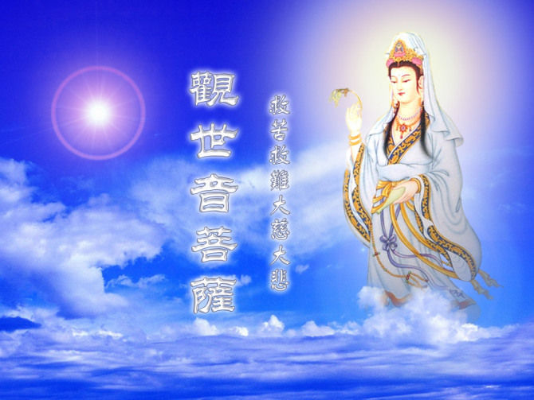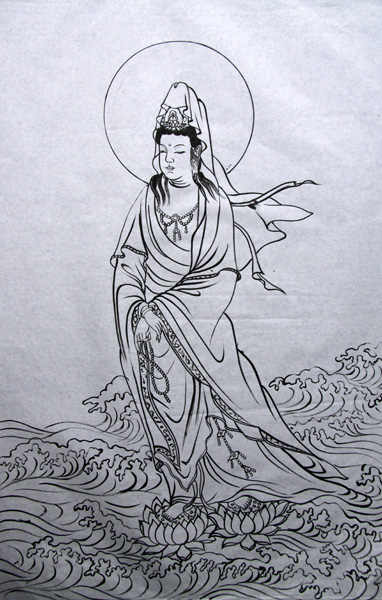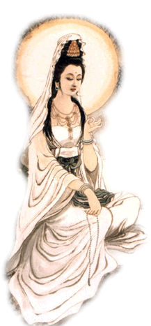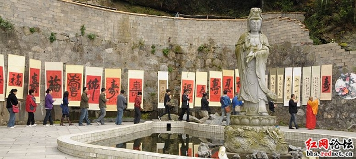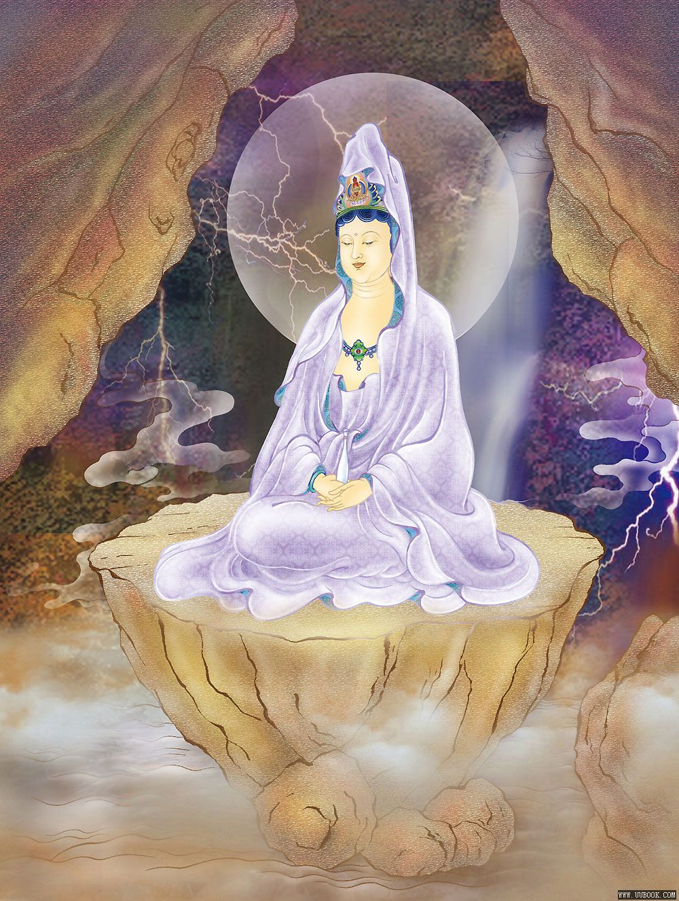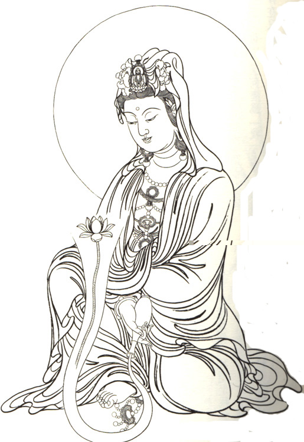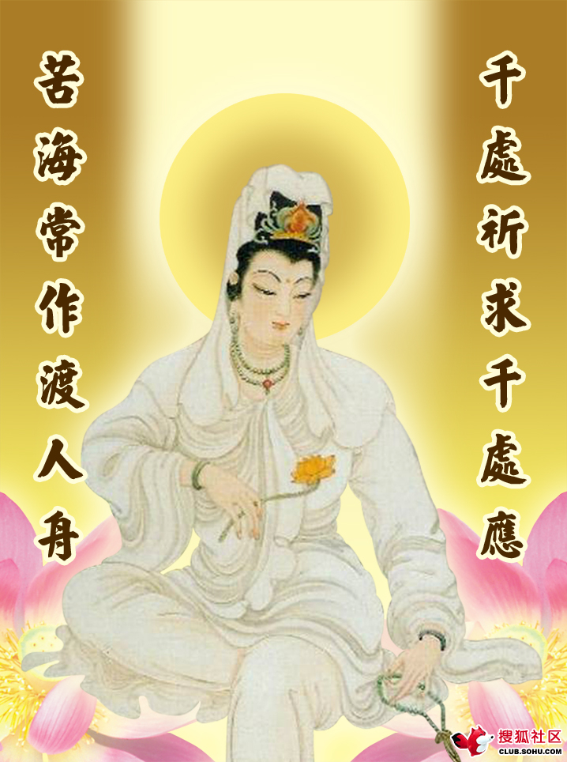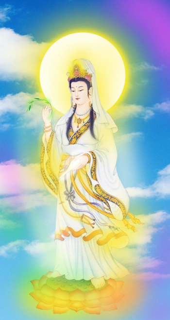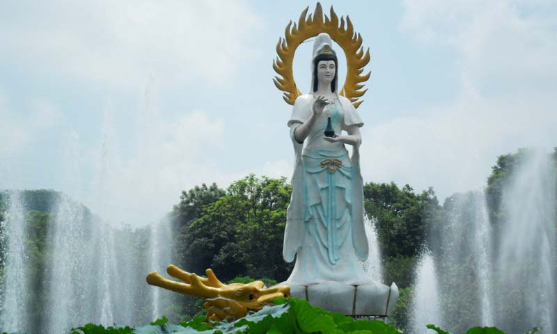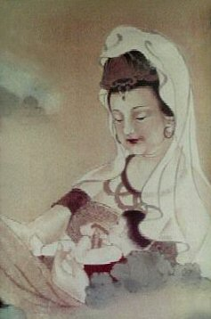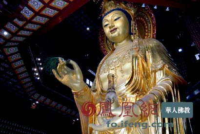

Links to other sites on the Web
Wikipedia:Guanyin
Back to the White Goddess
Back to Main Page